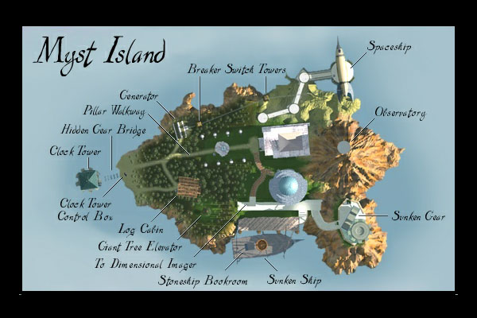
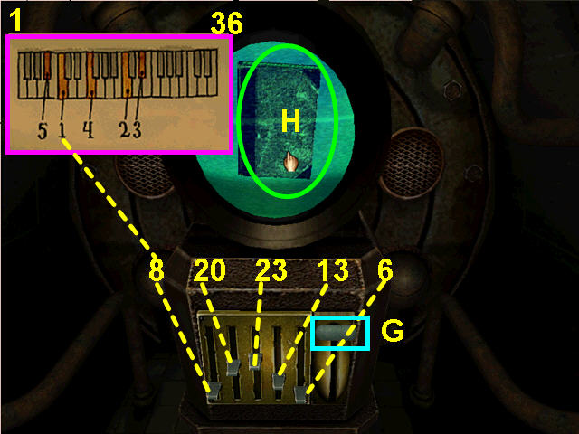
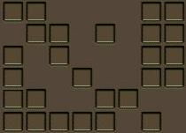
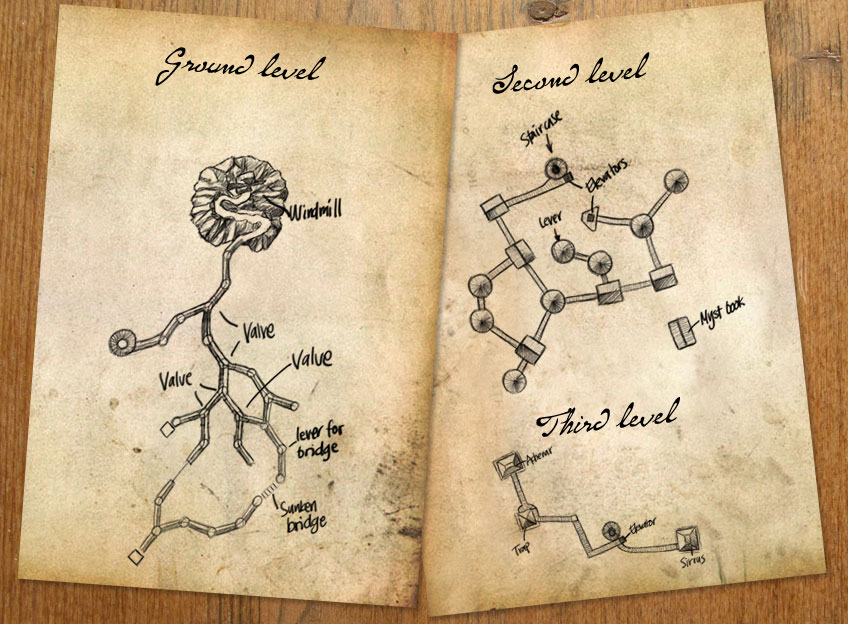
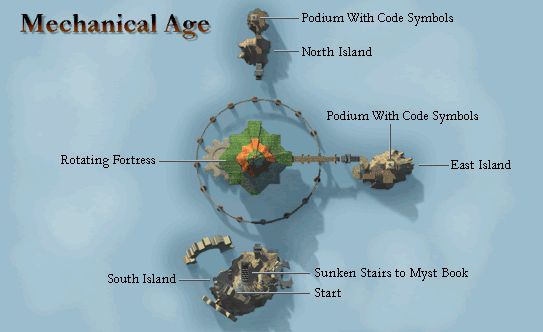
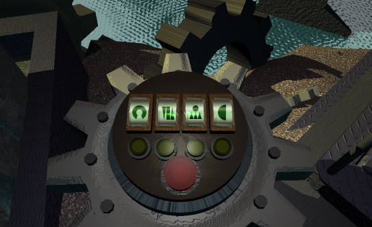
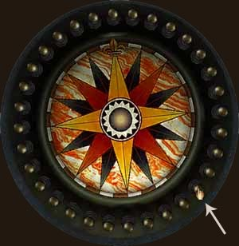
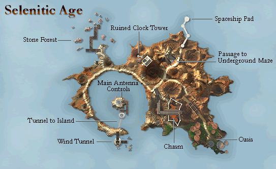

Myst (PC)
Walkthrough notes — original PC release, not the realMyst Masterpiece remake.

Todo
Add direction sounds.Myst Island
- Mechanical Age, Clock Puzzle → Rotation Puzzle
- Selenitic Age, Power on Station → Piano Puzzle
- Stoneship Age, Press 3 Symbols
- Channelwood Age, Cabin Matches and Fire
Marker note
Left half in Stoneship Age, right brother's room, 2nd drawer from bottom.
Right half in Channelwood, level 3, left of elevator, brother's room, right bed drawer.
The left page is incorrectly labeled "Off" in the Myst ME version; it's correct in the regular version.
Imager
Atrus message: 8
Island map: 40
Switch device: 47
Pool: 67
Planetarium
The three dates:
Oct. 11, 1984, 10:04 AM → Leaf
Jan. 17, 1207, 5:46 AM → Snake
Nov. 23, 9791, 6:57 PM → Beetle
Library tower
The tower can only point to switches that have been flipped up.
Symbols
From north:
| Eye | Bird |
| Snake | Cross |
| Beetle | Leaf |
| Anchor | Arrow |
Symbols light up green if you've clicked them, red if you haven't, when you hover with the mouse.
Cabin / safe
Code: 7, 2, 4 → matches
Obtainable by pointing the tower at the tree behind the cabin. The opening to the tree is 4 sounds, and the lift stays put while you turn the wheel.
Clock tower — outside
Time: 2:40 (left knob 8, right knob 2)
Obtainable by pointing the tower at the gear.
Clock tower — inside
Long-hold left ×3, short-hold right lever ×2 — gives code 2, 2, 1 (top to bottom).
Obtainable by pointing the tower at the gear.
Power station
Voltage code (59 volts):
| X | |
| X | |
| X | X |
Voltage mapping — the buttons:
| 1 | 6 |
| 2 | 7 |
| 3 | 8 |
| 4 | 9 |
| 5 | 10 |
Map to:
| 10 | 1 |
| 7 | 2 |
| 8 | 22 |
| 16 | 19 |
| 5 | 9 |
Voltage level is found by turning the tower toward the spaceship.
Organ
1st key
2nd key
3rd key
4th key
5th key

Bookshelf order
Channelwood, Stoneship, Selenitic (codebook), Mechanical.
The last D'ni page
All markers up except the dock marker, which is down. There are 8 markers total — one is on the island in the water (clock puzzle). The D'ni page is in the dock marker.
Page locations
Mechanical:
Red — left brother's room, secret area
Blue — right brother's room, secret area
Selenitic:
Red — straight, then right, then right again, above the flute button
Blue — left path, left of the water button
Channelwood:
Red — top level, left out of elevator, in drawer
Blue — top level, right out of elevator, go to end, on floor
Stoneship:
Red — left brother's room, left drawer, 3rd from top
Blue — right brother's room, on bed
Fireplace

Code found on page 158 of the right-most mid-shelf book.
Channelwood Age

- Initially the spigot is off — turn it once counter-clockwise to open.
- Turn the switches to the middle elevator.
- Go to level 2 and find the switch that opens the top door to the walkway.
- Open the door to the bottom of the walkway, to level 1.
- Reroute water to point to the walkway.
- Walk up to the tree on level 1 and take the elevator to level 2. Red page is left, blue is right — bring one back.
- Reroute water to the right and open the bridge, connecting the pipe.
- Reroute water to go to the new pipe.
Mechanical Age

Note: leaving the elevator on the top level crashes the game on some computers. Both brothers have secret rooms.
You must go under the elevator and turn it first before you can access the elevator.
Throttle controls
Left up for unlock. Right full throttle for 2 seconds to travel counter-clockwise a quarter turn. Lower the left throttle to lock at a quarter — a sound plays indicating the direction. Starting state is south; only east and north have code symbols.
The east island has the right two symbols; the north island has the left two.

Stoneship Age
Accessed from the boat.
The switches control the water level in three different areas and are mutually exclusive.
3rd switch
Lower water in the lighthouse and flip the switch twice on the chest.
2nd switch
Lower the water level in the brothers' rooms. Charge the generator in the lighthouse to get light in their rooms. A secret room can be found on the way back from the right brother's room — click the 12th button to the right from north, about 135 degrees.

1st switch
Lower the water level to the Myst book. Once the secret button is pressed, you can leave using the Myst book in the last area.
Selenitic Age
Accessed from the spaceship.

Sounds: flute, water, wind, loud wind, clanking.
The tower plays the symbols: 4, 1, 5, 2, 3
Island tower: 153.4, 130.3, 55.6, 15, 212.2
Water vehicle maze
Solution: N, W, N, E, E, S, S, W, SW, W, NW, NE, N, SE
Sounds — South: "bing", West: "prgree", North: nail sound, East: "wosh". Takes about 6 minutes to complete.
Selenitic Puzzle Map
*
N |
| |
| |
|
|
*
* * |
| | |
| | |
| | |
*----------*------------*
| |
| |
| |
* | |
| | |
| *----------* *-----------*
| | | //
| | | //
| | | *
| | |
| | |
*---------* | |
S \ (START) |
\ \\ *
\\ \ /* // \\ *
* \ / \\ // \\ |
\ \\ /// \ // \ |
\ \ / \\ / \\ |
\ /*/ (EXIT) // \\|
\ // // /*
\ /// // //
\ // * //
*--------------*/ /// */
// \\ /
// \\ ///
/ \ /
// \\ ///
// \\ /
* /*----------*/---------*
/// | \
/// | \
// | \
/// | \
*--------*/ | *
| *\
| \\\
| \\\
| \\\
* \*
Legend
S = The Star is a crashed vehicle only available in the realMyst version.
N ^ = North
* = junction (black) * = junction (marked/red)
— | / \ black corridor — | / \ marked red path — | / \ dark-red entrance path
(START) and (EXIT) mark the labeled rooms.